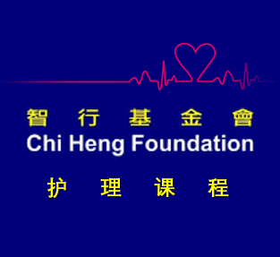

<!DOCTYPE html>
<html lang="zh-Hans"></html>
<html>
    <head>
        <meta charset = "utf-8">
        <title>智行基金会</title>
    </head>
    <body>
        <h2>智行基金会2019暑期护理课程安卓手机应用</h2>
        <br>
        <a href="app-release.apk" download> 点击这里下载安装包 </a>
        <br>
        <h4>应用简介：</h4>
        <p>应用摘录了部分课程中所讲到的常见疾病内容，如病理摘要，症状，及护理须知。应用也包含了基础急救内容，包括胸外按压，人工呼吸，以及海姆立克急救法。
            希望此应用能帮助大家更好的学习课程中所讲到的知识，在课程结束后也能帮助到大家的护理工作。
        </p>
        <h4>如何安装应用</h4>
        <p>注：此应用只能用安卓系统的电子设备安装
        <ol>
            <li>点击上面链接下载Apk</li>
            <li>下载Apk后，系统会提示是否安装应用，点击安装</li>
            <li>系统会提示此应用不安全，点击继续安装</li>
            <li>安装结束可打开应用</li>
        </ol>
        如果无法安装，可能需要打开授权第三方软件安装。进入<b>设置页面-->安全-->下拉到设置管理-->打开：未知来源——允许安装从非官方渠道获取的应用程序</b>
        <br>
        <br>
        发现Bug？无法安装应用？其他问题？有好的建议？<a href="mailto:helenwangcat@hotmail.com">点击这里给我发电子邮件</a>
        </p>

    </body>